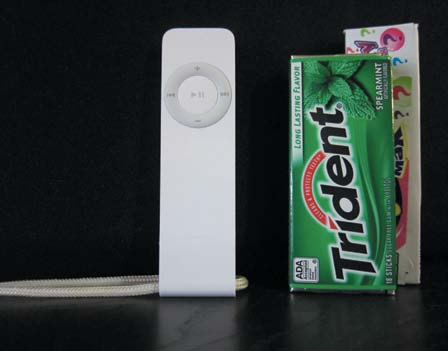
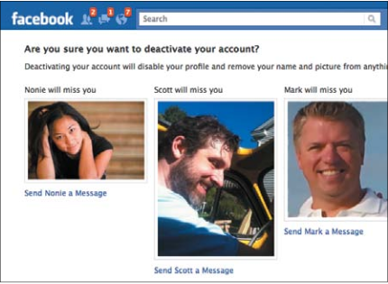

In this article today, I’m going to share with you some of the lessons I learned from one of the best books I’ve read: Seductive Interaction Design: Creating Playful, Fun, and Effective User Experiences.
I believe that you should read this book yourselves to fully appreciate all the information and insight the writer has to share. I will cover only the first half of the book. I will be pasting some excerpts, because there are many things that the writer describes a lot better than I could ever do. I will also be skipping a lot of the content for sake of brevity and of course because you should learn the rest from the book directly, not from me.
So think of this article as a review, preview, or just a simple article written by someone who is so excited about a book she read that she just needs to share some of what she learned with you.
Disclaimer: Images, blockquotes, and quotes are excerpted from Seductive Interaction Design: Creating Playful, Fun, and Effective User Experiences by Stephen P. Anderson. Copyright © 2011. Used with permission of Pearson Education, Inc. and New Riders.
Link to book: Seductive Interaction Design: Creating Playful, Fun, and Effective User Experiences.
OVERVIEW
Writer, designer, and speaker Stephen Anderson shows you in this book how the same tactics humans use to attract a mate can apply to the interactions between humans and interactive devices, to make people “fall in love” with your websites and/or applications.
The book focuses on human behavior, in both physical and digital contexts, and talks about what actually drives people and influences their behavior and “seduces” them into taking certain kinds of actions. It also studies a lot of examples of existing web applications, and explores the underlying psychological principles applied to the user experience of these applications, that make them as effective and successful as they are.
One of the first examples mentioned in the book is LinkedIn and the effectiveness of the Profile Completeness process, specifically how LinkedIn manages to pull quite a bit of information out of millions of users through a series of prompts that are simple enough and yet very effective. By understanding what motivates people, they were able to get a lot of information out of them. And this is what the book is concerned with: why people do the things they do.
The concept of level completeness used in LinkedIn can also be found in games as a “progress dynamic”, with points and levels. It can also be found in other contexts, one of which is martial arts, where each “level” is represented by a colored belt, one you earn while advancing towards the black belt. By having different colored belts [..] you get rewarded and recognized along the path to mastery. These belts are a tangible, achievable goal to work toward
.But why do we do the things we do when we have this kind of progress dynamic?
We could look at several ideas from psychology:
- Sequencing: We are more likely to take action when complex tasks are broken down into smaller tasks.
- Appropriate challenges: We delight in challenges, especially ones that strike a balance between being overwhelming and being boring.
- Status: We constantly assess how interactions enhance or diminish our standing relative to others and our personal best.
- Achievements: We are more likely to engage in activities in which meaningful achievements are recognized.
So always offer your users some kind of reward after every step they make throughout a sign up form, or any other kind of forms that require several steps along the way to completeness, like surveys, for example, and be clear about why you’re asking for the information you ask for, and help them understand that whatever information you ask from them will actually benefit them, even if you have other reasons you’re asking them for this information. State your reasons in terms of how they would benefit the user to provide this information to you, because we’ve known that we are more interested in people who are interested in us. no one wants to sit and hear someone talk about themselves all night. The same is true in many online interactions
.
The writer then goes on to mention another example of great UX, which benefits both the user and the owners of the application, which is iTunes. He explains the process of signing up for iTunes in detail, and reveals the psychological part of the process, that makes users want to continue the process:
- Feedback loops: We’re engaged by situations in which we see our actions modify subsequent results.
- Curiosity: When teased with a small bit of interesting information, people want to know more.
- Visual imagery: Vision trumps all other senses and is the most direct way to perception.
- Recognition over recall: It’s easier to recognize things we have previously experienced than it is to recall them from memory.
This kind of perspective offers you a new way to look at user experiences. For example, one example of UX that is different and very attractive and more enjoyable, in my opinion, is the new form and survey experience that Typeform offers, because it uses several concepts including sequencing and visual imagery, and they use images for a lot of their questions and offer multiple choices which are easier to use than having to recall stuff from memory. All these elements make filling up forms and taking surveys easier and more enjoyable, or at the very least, a lot less boring.
Usability and Psychology
A simple and straightforward differentiation between the roles of usability and psychology in user experience design is the following:
Usability clears the way for a good experience by eliminating troublesome interface distractions, but a great experience stems from something more—an awareness of why people could or do care. The danger is in confusing “ease of use” with actually desiring to use something. These are two entirely different things. Both are essential, but simply making something more usable won’t guarantee any more clicks or conversions. in this case, it was psychology that made this so engaging.
Here is an image showing the difference in roles between usability and psychology in user experience design:
By using psychology to make your website/application move from being functional, reliable, usable, and convenient to being pleasurable and meaningful to the user. With this in mind, the writer then introduces a “user experience hierarchy of needs model” (shown in the image below)
So if you want to create a revolutionary product, you have to think beyond basic functionality, usability, and convenience, and think about what kind of experience you want the user to have when using your product/website/application, but without forgetting the basics of usability.
Aesthetics, Beauty, and Behavior
The first “Weapon” of seduction is Aesthetics. This section explores the relation between aesthetics and human cognition, affect, and how aesthetics help our brains make certain associations between a product, and other real-life objects, and how these associations will end up affecting how we feel about it, and consequently how we behave.
As user experience designers, we must consider every stimulus that might influence user interaction. […] “aesthetics examines our response to an object or phenomenon” (according to Wikipedia). In other words, aesthetics aren’t just about the artistic merit of Web buttons or other visual effects, but about how people respond to these elements. The question becomes: How do aesthetic design choices influence understanding and emotions, and how do understanding and emotions influence behavior? […] we’ll look at how aesthetics influences cognition, affect, and associations.
Aesthetics and Cognition
Cognition is the process of knowing. Based on patterns and experiences, we learn how to understand the world around us [..] and aesthetics play a critical role in cognitive processing
, that is, in the way we perceive elements in the digital context.
The human brain has its own way of interpreting color, shadows, shading, and other natural occurrences, and the role of aesthetics is to communicate the functionality of the elements we see to our brains. They provide the brain with cues that communicate how we should interact with these elements. So, when designing, designers should think about what each color means, in addition to the role and meaning of shadows and shading.
For example, think about a simple button (image below). The shadows, gradients, and beveled edges of the upper right button help the brain understand that this is in fact a button, and therefore it can be pressed, and that we can expect something to happen if we do. In this case, aesthetics communicate function. These shadows, gradients, and beveled edges are perceived affordances—cues that communicate how a user can, and should, interact with an object. translation: if it looks like a button, it must be a button
.
The second image shows how wrong usage of colors can confuse the brain about the actual meaning and functionality of an element, in this case an alerted message.
The use of shadows also plays an important role in determining how elements look on a page, and which elements lay on top of others (stacking context), so special attention should be paid to these kinds of details. One of my favorite paragraphs in this book is this one in which the writer gives a golden tip:
Whatever the natural reference is— shadows, reflections, lighting, bevels—i like to ask designers, “Could you build a physical model of this page?” if you can’t, then the viewer will likely be disturbed, as something feels not quite right.
So, if you can build a physical model out of a digital design, then it can be interpreted correctly by the brain, otherwise it’s just not right!
In addition to cuing the brain to understand the functionality and shape of objects, aesthetics play in a role in determining the relationship between these objects.For example, the law of proximity explains that if i place two or more items in a cluster together, you’ ll assume they are related
.
Then there is also contrast and connectedness.if one object has different characteristics from other objects, we perceive it as being different. This is known as contrast.” Additionally, elements connected by uniform visual properties are perceived as being more related than elements that are not connected. This is known as uniform connectedness
.
Additionally, aesthetics help us understand the “space” in which we interact, for example, placing elements behind each other in a 3D space to communicate distance. Another example is the famous “genie effect” animation in Mac OS X, which communicates where a file is being stored/minimized for easy retrieval later.
Aesthetics and Emotion
Some UX designers believe that by making a product easy to use and convenient, this will directly lead to creating a better, enjoyable user experience. But in this chapter, the writer proves that things that are enjoyable will be perceived as easy to use and convenient. Again to relate digital experiences to real-life interactions between people, Think of how quickly we form judgments about people in the first few moments after we meet them. Conversely, think about how our personal appearance (our personal aesthetic) affects the way people perceive us; or how product packaging influences our perception of the product inside. We may know better, but we continue to judge a book by its cover
.
The way products and interfaces look says a lot about them. Take for example an application with a lot of attention to details. When you see this kind of attention, you subconsciously trust the application you’re interacting with more. On the other hand, imagine a UI with inconsistent fonts, odd paddings, line heights, and such details that can butcher even the greatest designs, “how might these sloppy UI details affect our perception of the application?” How can you trust an application whose owner wasn’t attentive enough to care about these small details of their own product? How will they be able to pay attention to our needs if they can’t even pay attention to the small details in their product?
There are also a lot of studies mentioned in the book that prove that not only do aesthetics affect perceived usability, they also influence actual performance
. I’m going to mention only one short experiment for the sake of brevity:
One study, “The Influence of Design aesthetics in usability testing: effects on user Performance and Perceived usability,” (Sonderegger and Sauer, 2009), presented adolescents with one of two mobile phones, an attractive one, and one less so. The conclusion? “The visual appearance of the phone had a positive effect on performance, leading to reduced task completion times for the attractive model.
All the experiments the writer mentions lead us to one firm conclusion:
The more we learn about people, and how our brains process information, the more we see the truth of that phrase: form and function aren’t separate. If form exists independently of function, and we can treat aesthetics and function as two separate elements, then we ignore the evidence that beauty is much more than decoration. Our brains can’t help but agree.
Aesthetics and Associations
Aesthetics play a major role in associations our brains make between objects. Our brains tend to try to connect objects to other objects, and when that is done it shares the characteristics of one of these objects with the other.
The best way to explain this point is to just paste one of the (interesting) examples the writer mentions in the book: Apple products!
In a 2005 essay on design and perceptions, Luke Williams recounts how another designer discovered why so many people think of the iPod as a “clean” device. Apparently, this designer had been sitting on the toilet (where all great ideas happen!) when it occurred to him that the iPod references the same materials used in a bathroom, “the shiny white porcelain of the bathtub and the reflective chrome of the faucet on the wash basin.” This might sound laughable, until you factor in that Jonathan ives, apple’s senior vice president of design, once worked for an agency that designed—you guessed it— bathroom appliances. Coincidence? Perhaps. What’s important is that “consciously or unconsciously, the iPod materials reference a convention of ‘cleanliness’ that everybody interacts with every day—a bathroom.
We’re talking about human perception, and the system of conventions that shapes our perceptions. Perception is essential to the process of design. These aesthetic associations are evident in other apple products. If you own an apple laptop, you may have noticed the soothing sleep-light indicator that’s visible when your computer is “sleeping.” The rate at which this light fades in and out is comparable to that of the average respiratory rate for adults, about 12 to 20 breaths per minute. Coincidence? apple owns the patent for a Breathing status Led indicator (Us 6,658,577 B2), which “mimics the rhythm of breathing which is psychologically appealing".
One final example: when apple launched the original iPod shuffle, they compared it directly to a pack of gum, due to the equivalent sizes of the two products. This is a great example of a conceptual metaphor, in which we make sense of new information by associating it with something we’re already familiar with.
The Power of Faces
Including faces in our online interactions also affects the associations our brains make, because faces carry with them some kind of associations, and can help build trust because of a higher fidelity of information that the application or website presents.
One example to best explain this notion is Facebook's logout screen.
The original Facebook deactivation page was pretty boring. It simply stated: “We’re sorry you’re leaving. tell us why Facebook was not useful.” One of the designers suggested that closing your account be “more like leaving summer camp (you know, a place that has all your friends and you don’t want to leave.)”  Inspired by this concept, the design team created a new deactivation page that pulls faces from a few of your friends’ profiles, along with the message that asks, “are you sure you want to deactivate your account? Your 498 friends will no longer be able to keep in touch with you.” has this made a difference? according to Julie Zhuo, design manager at Facebook, this has reduced the deactivation rate by 7 percent. at least a million fewer users have deactivated their accounts!
Playful Seduction Techniques
In dating terms, it’s easy to think, “People will like me for who I am.” The truth is people have to be interested just enough to get to know you (your app) in the first place. What we’re talking about in this chapter are ways to design interactions that are more interesting and playful—interactions that engage people in both intellectually and emotionally. This leads to experiences that do more than merely work, they delight people.
Be Fun
We all like funny people. And by funny I don’t mean people who are always making jokes and trying to make you laugh, because those can become really annoying! By funny people I mean people who are fun to be around, who always have their way to make you smile, and who are great talkers, and can get a message to you in a fun way that sticks into your brains and that you’re more likely to remember later, and smile about it!
By including humor in digital contexts, you engage people in a meaningful and memorable way. One of the examples that show the kind of fun you can use is the Southwest Airlines company.
Some may argue that humor is not always appropriate, so the writer has another golden advice to give:
If it’s appropriate in a real-world interaction, why not online as well? Are we suddenly transformed into emotionless automatons when we sit in front of a screen? No.
[...]Humor is appropriate (or inappropriate) based on the situation, not the industry.”
Be Unpredictable
Our brains are aroused by the unexpected. While stability and a sense of control are no doubt critical user interface principles, there’s something exciting about the unexpected. not knowing what to expect heightens our anxiety, and our curiosity. Our brains are aroused by new and unexpected discoveries within our normal routines.
One of the simplest way to make an experience more enjoyable after repeated visits, is by breaking the routine. One of the simplest and most obvious examples of offering a slight surprise and breaking the routine is the Google Search homepage. The Google logo changes depending on the occasion. This little change adds a new flavor to our daily visits, that would otherwise be all boring and the same, especially that the Google homepage design is already too simple to start with. So add these little design touches help break the routine and keep our brains expecting something new at different occasions.
Another example of breaking routines is for example changing the content of a confirmation message every time it pops up so that it’s different every time, or changing an image on the homepage after repeated visits, or delightful messages that pop up in unexpected places. These messages don’t have to be necessary, yet they could be pleasant enough to stick in the head of your users or readers.
One perfect example of a delightful surprise the writer mentions is a note he saw while he was going up the stairs in a hotel, where he was surprised by a “Everything is going to be alright” written in uppercase on one of the stairs (image below), that made him grin, and was so pleasant that he still remembers it and thought it was worthy of mentioning as a great example in his book.
A good date is full of delightful moments— some planned, some not—that make the overall experience memorable and pleasant. What does my wife remember from our first date? among other fond memories, it rained and we got our shoes stuck in the mud!
These kinds of small delightful surprises make the interaction with the digital world seem more human, which is a very important aspect if you’re trying to sell yourself as a trustworthy person.
So what makes a good present or surprise? Another golden advice from the writer:
A good gift is one that pumps up the recipient.
Think of the word pump: P is for pleasurable, U is for unexpected, M is for meaningful (useful, not generic), and the last P is for pleasantly packaged.
Be Mysterious
In new relationships, flirtation often involves some element of playful teasing
, and a similar kind of teasing can be applied to the relationship between users and a website or application.
Curiosity is a powerful human drive that pushes us to do a lot of the things we do. It’s probably the reason why I read the book in the first place. I was curious to know how a website or application can be “Seductive”, I was even more curious after I started reading to understand how people think, and understand how my brain works, and why I do the things I do.
Part of the role of usability is make things clear to the user, and remove all roadblocks and ambiguous elements that make a user experience become a rather frustrating one.
Just like we have to care about the basics and make an application or product usable and functional, and after that we can cross that line to make it pleasurable and memorable, we can also start thinking about adding some kind of controlled uncertainty to the experience after having provided the user with the clarity he needs, thus introducing a level of thrill and suspense to the experience.
Sometimes giving the user all the information they want from the first visit rids them of their interest and leaves no more room for curiosity to drive them forward to further explore the application at hand.
You want to make sure that you tease them with as little information as necessary, enough to drive them into the “curiosity zone”.
Information can be presented in a manner that is straightforward or curious. If we opt for the latter, we are guaranteed not only attention, but probably higher engagement as well— curiosity demands that we know more!
[..] <p>When we become aware that information is missing—when something changes from being known (or so we thought) to an unknown state—we become curious. This is the explanation of curiosity posed by behavioral economist George Loewenstein in his information gap theory. Loewenstein says, “curiosity happens when we feel a gap in our knowledge.”</p> [..] <p>The feeling we get from these information gaps is best described as deprivation, which is critical to understanding why we are motivated by curiosity. to “eliminate the feeling of deprivation,” we seek out the missing information.</p> [..] <p>Simply stated: I’m curious because there’s a gap between “what I know and what I want to know.</p>
It’s human to be curious. And it’s part of our nature to seek to solve mysteries around us. The kind of curiosity the writer refers to in his book is akin to teasing. Teasing people by making them aware that there is something they don’t know. But there are a few ways to make this teasing effective, and I believe the most important one is to let them know that the information you’re hiding away from them will benefit them the most. Also, make sure that once they get to the point where they uncover the information you withheld from them at the beginning, they find that this information meets their expectations, the expectations they built because of you. Also, don’t lure users with something that is given away freely elsewhere
.
Let others express themselves around you
The final principle in the playful seduction section is self-expression.
Giving the users the ability to express themselves in your application, by giving them, for example, the ability to customize the application and make it more personal, is very important when the users expect this kind of option to be available to them, and even when they don’t!
The need for self-expression shows up in just about any area where people are allowed to control something, especially where this control is tied to an identity.
Some examples of allowing users to express and apply their personal identity to an application would be to allow them to change the theme, or use custom emoticons, or change the content and add/remove what they want, change the layout and theme, and so on.
If you’re one of the people who use Windows’ MSN chat application, then you definitely know that for the past couple of months or more, the company was preparing MSN users to switch, or “upgrade”, to Skype. I am one of the individuals who sincerely hated this “upgrade” for one simple reason: Skype doesn’t allow you to use custom emoticons. And after reading a lot of comments on the Skype blog, I realized that I am only one of so many people who hated this “upgrade” as well, and my intention was very clear: to not make the switch. Why? Because my MSN is customized to my needs, and Skype doesn’t allow you to add custom emoticons. I love custom emoticons. I can’t chat without them. And I really believe this should not be called an upgrade because IMO to upgrade means to make better, and when your newer version lacks a lot of the best features of your previous one, then this, IMO, is more of a downgrade. Microsoft should’ve given this move a lot of thought before actually deciding to move forward with it.
The point is, giving your users the ability to customize your application or express themselves in any way is a great way to make the application feel more personal and thus enjoyable for them. And if you ever decide to do that, please don’t take that option away from them later. If you add it to your app, just make it stick.
Final Words
I only covered the first two sections of the book in this article. The amount of information, tips, and insight I wrote here is just a drop from the sea of what you can find in the book. The next two sections are titled “The Subtle Art of Seduction” and “The Game of Seduction”, with a lot more insight and tips in them.
If you’re a UX designer, a designer, a web developer, or any person interested in learning more about human behavior, or interested in making your products more popular or trying to build a stronger online existence, then this is definitely a must-read for you. I cannot recommend this book enough.
After reading this book, I’m definitely never going to look at applications and UX like I used to, because it gave me a lot of insight, and helped me see and understand the reasons behind successful user experiences, and taught me how I could apply these principles even to a small website, not just a huge application.
I hope you enjoyed this article and found it useful. Thank you for reading!